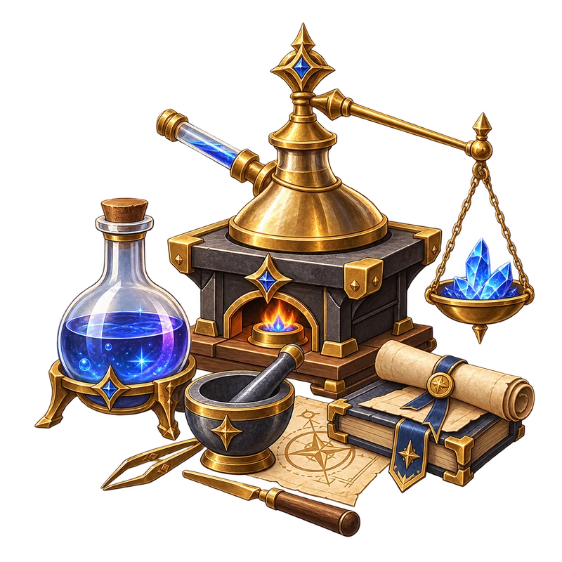
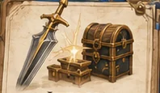
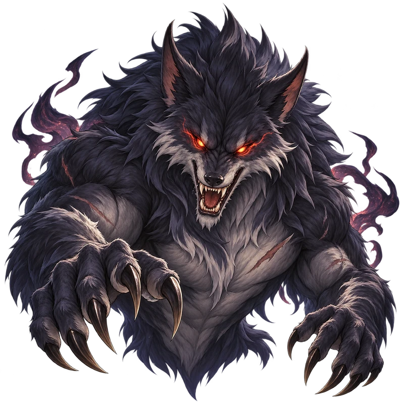
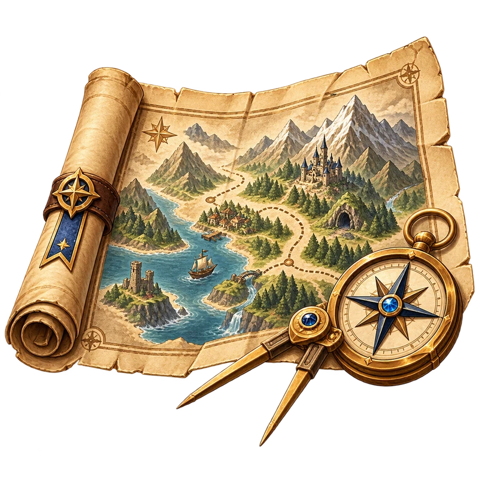

Game Updates
View all →1.2.13
Patch Notes — v1.2.13
Guilds, Lycaros rewards, Claw Machine, damage cap, and network improvements.
Aug 20, 20261.1.12
Patch Notes — v1.1.12
Combat, pet, title, collision and item-tradability improvements.
Aug 18, 2026From your first steps to what comes next.
Guides, gear, quests, bosses, and more.
 BuildsJobs, stats, skills and character optimization.Explore
BuildsJobs, stats, skills and character optimization.Explore

CraftingRecipes, materials and crafting tools.Explore
GearWeapons, armor, equipment and upgrades.Explore FarmingDrops, gathering, fishing and resources.Explore
FarmingDrops, gathering, fishing and resources.Explore

BossesEncounters, mechanics, preparation and rewards.Explore
WorldAreas, maps, NPC services and points of interest.Explore Jobs & RacesClasses, races, skills and character choices.Explore
Jobs & RacesClasses, races, skills and character choices.Explore
Guilds, Lycaros rewards, Claw Machine, damage cap, and network improvements.
Aug 20, 2026Combat, pet, title, collision and item-tradability improvements.
Aug 18, 2026Current redemption status has not been re-tested.
PortalDB connects items, quests, NPCs, bosses, locations, mechanics and player tools. Small source symbols offer additional details on hover or keyboard focus, or with a tap on mobile.